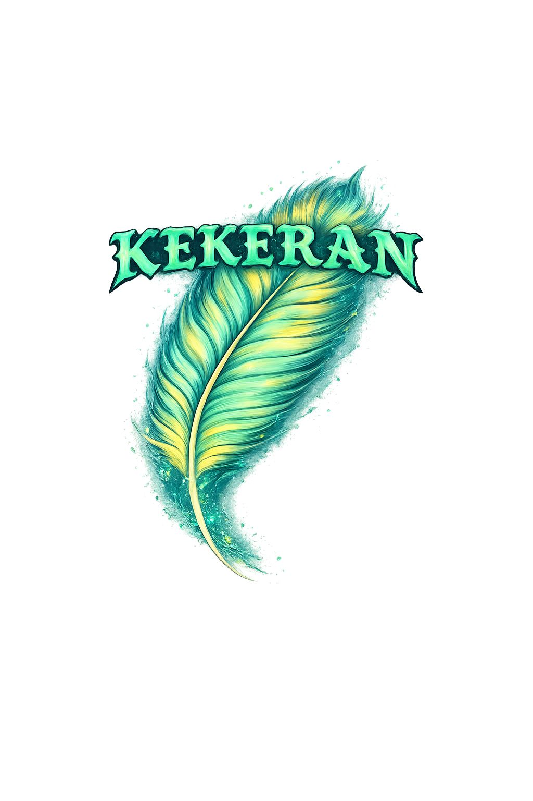
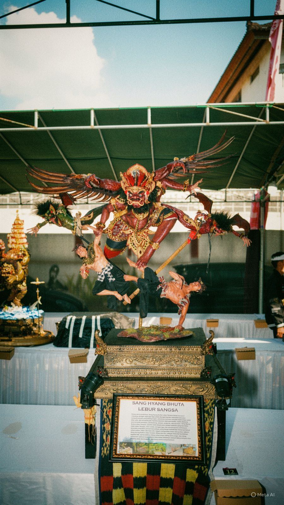
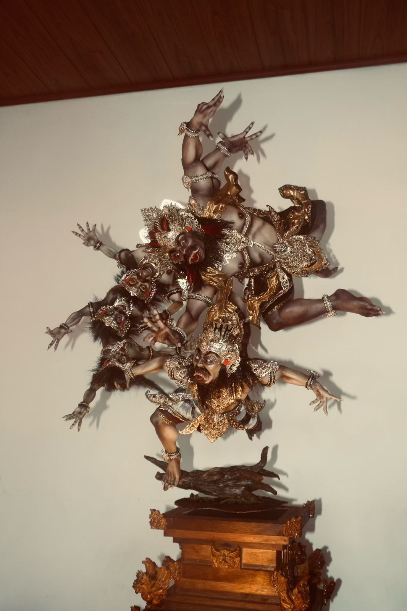
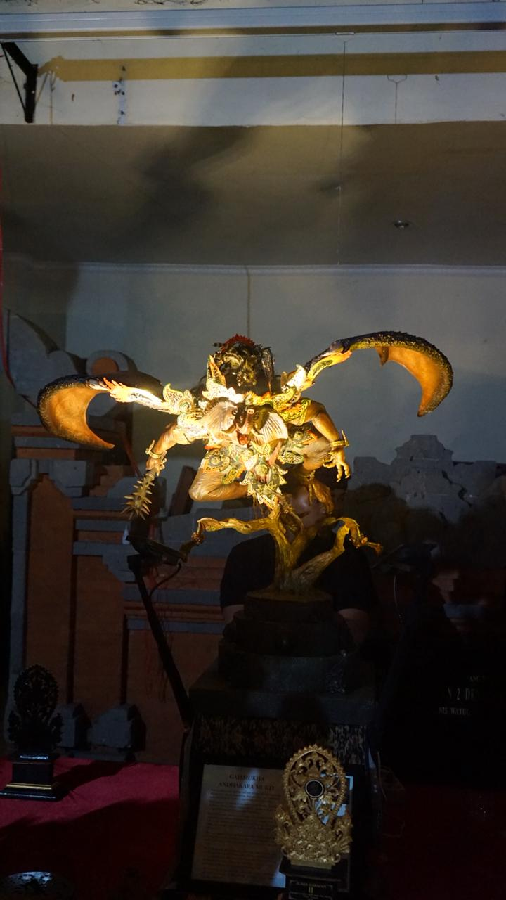
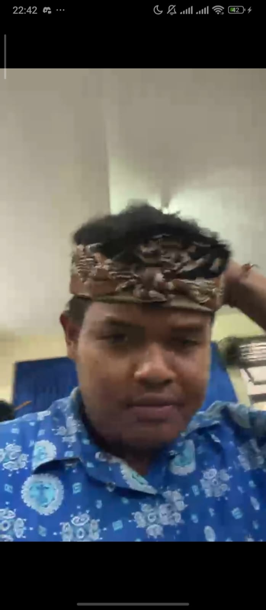
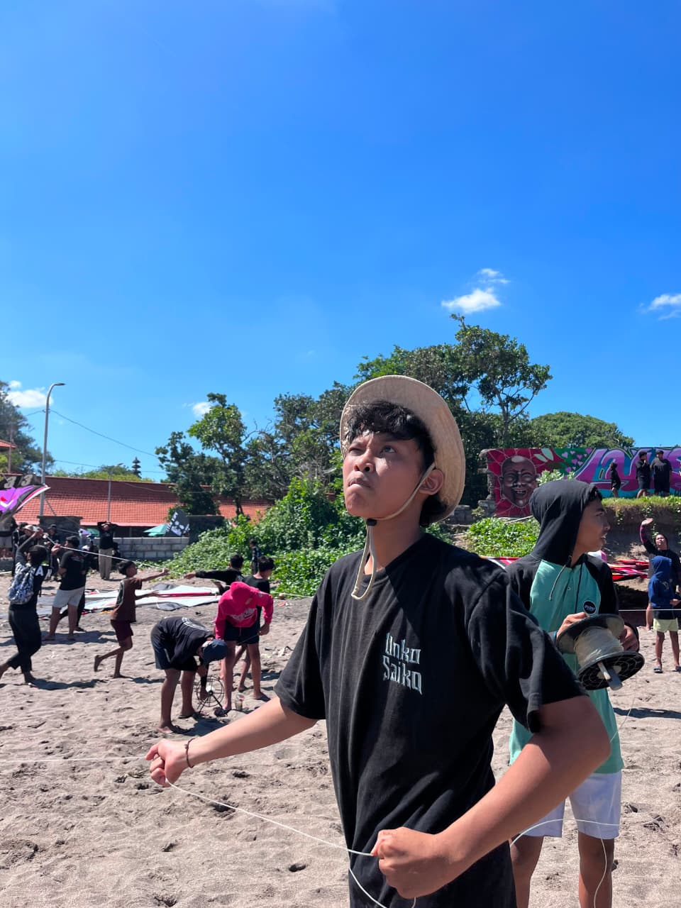
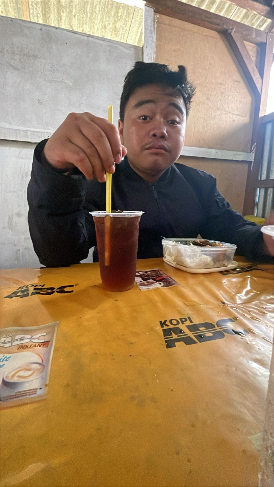
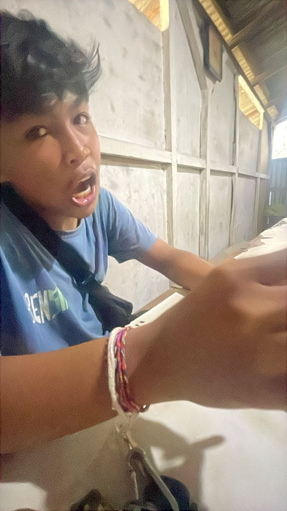

Team kreatif yang menggabungkan budaya Bali dengan teknologi modern untuk menciptakan miniatur Ogoh-Ogoh yang menarik, edukatif, dan memiliki nilai seni tinggi.
Mini Ogoh-Ogoh
Dalam perwujudannya, Sang Hyang Butha Lebur Sangsa dapat merubah wujudnya dengan rupa apa saja untuk menggiring dan menuntun manusia menjadi pribadi yang kebingungan, akibatnya manusia menjadi salah ucap. salah lihat, gila, dan tersesat jauh. Karena dituntun oleh para butha, maka manusia-pun menjadi pemabuk, pembohong, pelupa, penjarah, dan durhaka. Sang Hyang Butha Lebur Sangsa, apabila tidak diupacarai melalui upacara yang bernama Caru Lebur Sangsa, akan selalu mengganggu dan menyengsarai kehidupan manusia yang tidak pernah beryadnya, yang hanya memikirkan hidupnya hanya untuk makan, tidur, dan lupa diri. Segala malapetaka inilah merupakan ciptaan Sang Hyang Butha Lebur Sangsa. Maka dari itu, sebagai manusia hendaknya jagalah hati, ajaran bathin, hidup rukun tanpa saling mencurigai, dan tetap melakukan yadnya secara tulus iklas maka akibatnya seluruh keturunanpun akan mendapatkan kerahayuan, dan hidup dalam keharmonisan

Pada kala dunia mulai diliputi kegelapan, saat hati manusia dipenuhi amarah, keserakahan, iri, dan kesombongan, maka lahirlah kekuatan Adharma yang menjelma menjadi sosok mengerikan… Rawakumbala Murti. Ia bukan sekadar raksasa. Ia adalah bayangan dari jiwa manusia itu sendiri. Dengan banyak wajah yang mengerikan, setiap wajah memancarkan sifat buruk—amarah yang membara, kesombongan yang membutakan, nafsu yang tak terkendali, dan kebingungan yang menyesatkan. Tubuhnya menjulang, kukunya tajam, dan suaranya menggelegar, mengguncang keseimbangan alam. Namun di balik wujudnya yang mengerikan, tersembunyi sumber kekuatan yang tak kasat mata. Pada bagian belakang tubuhnya, berdenyut sebuah pusat energi gelap, Cakra Anahata, cakra hati yang telah tercemar. Cakra yang seharusnya memancarkan kasih dan keseimbangan, kini berubah menjadi sumber iri, kebencian, dan dendam. Dari sanalah Rawakumbala Murti memperoleh kekuatannya bukan dari apa yang terlihat di depan, melainkan dari kegelapan yang tersembunyi di dalam diri. Ketika dunia hampir jatuh dalam kehancuran, muncullah kekuatan agung. Bhatara Kala. Sang penyeimbang jagat, penguasa waktu dan hukum alam. Namun ia tidak datang untuk sekadar menghancurkan Ia datang untuk menyeimbangkan. Karena Rawakumbala Murti bukan berasal dari luar melainkan lahir dari dalam diri manusia. Para Dewa pun menyadari, bahwa kehancuran Adharma tidak cukup dengan kekuatan ilahi saja. Melainkan harus dibarengi kesadaran manusia. Melalui Bhuta Yadnya, manusia diajarkan untuk tidak memusnahkan kegelapan,melainkan menetralkannya. serta mengembalikan keseimbangan antara diri, alam, dan semesta.

Pada saat dunia mulai dipenuhi oleh sifat adharma, ketika hati manusia dikuasai oleh amarah, keserakahan, kesombongan, dan kebingungan, maka lahirlah energi kegelapan yang dikenal sebagai Bhuta Kala. Dari kegelapan itu muncul sosok menyeramkan bernama Gajamukha Andhakara Murti, yaitu perwujudan (Murti) makhluk berkepala gajah (Gajamukha) yang lahir dari kegelapan (Andhakara). Ia memiliki kepala gajah yang melambangkan pikiran atau kebijaksanaan yang telah menyimpang, menjadi kasar dan tidak terkendali. Sayap dan kaki seperti kelelawar melambangkan kekuatan malam yang bergerak bebas tanpa kendali, menyebarkan rasa takut dan kegelapan ke dalam hati manusia. Di tangan kanannya, ia menggenggam gada hitam yang melambangkan kekuatan besar yang telah kehilangan arah dharma. Kekuatan tersebut digunakan bukan untuk melindungi, melainkan untuk menghancurkan dan menindas kebenaran. Sosok ini menjadi simbol bahwa kebijaksanaan tanpa dharma dapat berubah menjadi kegelapan. Gajamukha Andhakara Murti bukan hanya perwujudan kekuatan jahat, tetapi juga cerminan dari diri manusia ketika kehilangan kendali atas pikiran dan moralnya, membawa gangguan, merusak kesucian, dan mengacaukan keseimbangan dunia. Oleh karena itu, manusia diingatkan untuk selalu menjaga pikiran dan hati agar tetap berada di jalan dharma agar tidak terjerat dalam kegelapan adharma.
Ogoh - Ogoh Mini merupakan sebuah karya inovatif yang bertujuan melestarikan budaya Bali dalam bentuk miniatur modern. Melalui proyek ini, kami ingin memperkenalkan tradisi Ogoh-Ogoh kepada generasi muda dengan tampilan yang menarik dan mudah dipahami. Selain memiliki nilai budaya, karya ini juga dapat dijadikan media pembelajaran dan koleksi seni khas Bali.

Mengatur seluruh proses pengerjaan proyek dan koordinasi tim.

tukang tegen gogoh

orang penting dalam urusan ngayab ngayab, kadang ketug ketug kadang bantug

Urusan dokumentasi wa gen cang